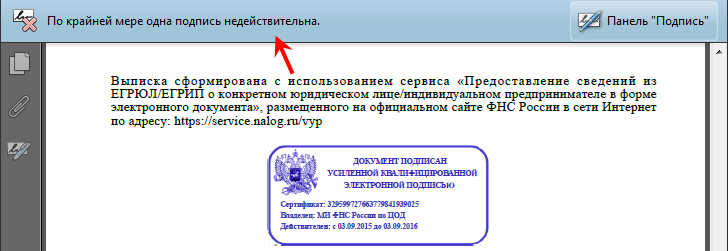
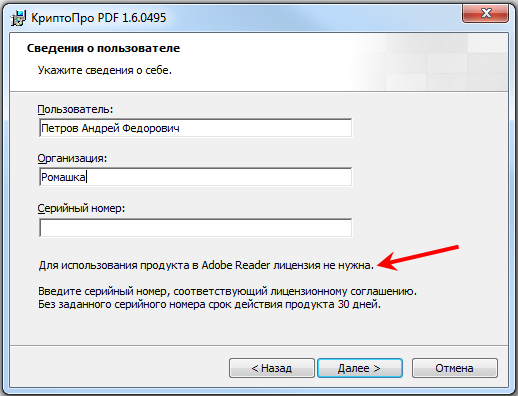

Set up Adobe Reader to check the digital signature
If the Adobe Reader is not set up properly when opening the USRLE/USRIE extract file, the panel will appear, indicating that the signature is invalid:

Adobe Reader configuration possibility depends on which cryptographic service provider is installed on your computer.
When using ViPNet CSP
For ViPNet CSP cryptographic service provider users, electronic signature verification using Adobe Reader is not available, but despite this, the signature is legally valid.
When using КриптоПро CSP
To verify the FTS electronic signature in the extract, you need to download the CryptoPro PDF plugin from https://www.cryptopro.ru/products/other/pdf and install it in the system.
Please note that purchasing a license and entering the serial number is not required to use CryptoPro PDF in Adobe Reader.

Electronic signature verification is configured in “Preferences...” menu item in Adobe Reader:
Click the "More ..." button in the "Signatures" - "Verification" section.
In the window that opens, in the “Verification Behavior” section, set the radio to “Always use the default method” and select “CryptoPRO PDF” in the drop-down list:
Open the extract file again after saving the settings. After re-opening, the signature verification panel will display a positive verification result:
You can view detailed information about the signature by clicking on the stamp at the end of the document and pressing the "Signature options ..." button in the window that opens: